Pioneira no Brasil em multiplicação genética, a Agrogen produz até 14 milhões de matrizes por ano em unidades no Rio Grande do Sul e no Paraná.
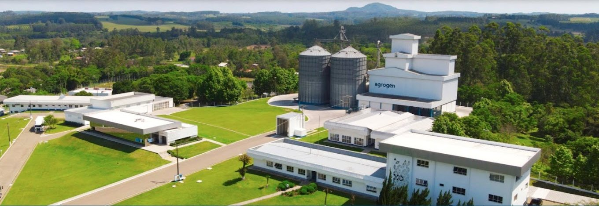
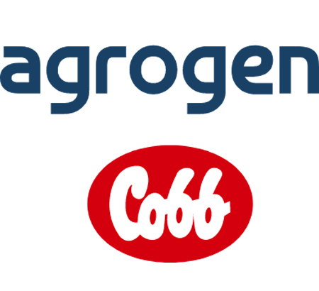
A Cobb é referência mundial e líder em genética de matrizes pesadas.
A Agrogen é resultado do sucesso de um grupo familiar de empreendedores, que iniciou suas atividades em 1934. Desde os anos 70, seus sócios e gestores tornaram-se referência mundial na avicultura.
Na multiplicação genética é pioneira no Brasil, em parceria com a Cobb. Uma parceria de sucesso, que garante ao mercado matrizes nobres, com padrão de qualidade reconhecido internacionalmente.
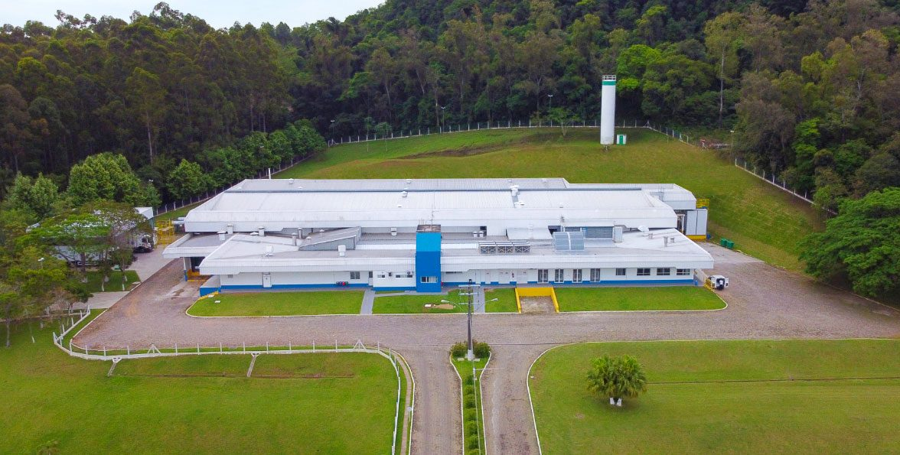
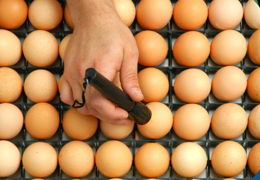
A Agrogen recebe as avós da Cobb com um dia de vida. Após a criação e a seleção cuidadosa, para características genéticas já definidas, são geradas as matrizes fornecidas aos clientes.
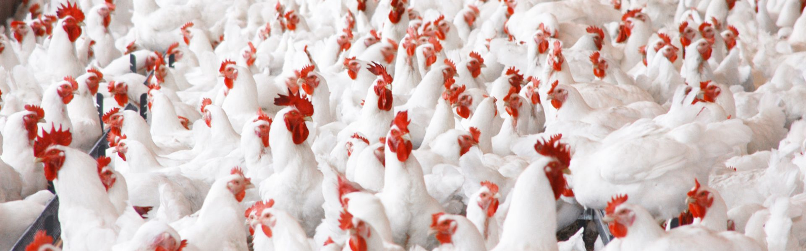
Chegam da Cobb com um dia de vida.
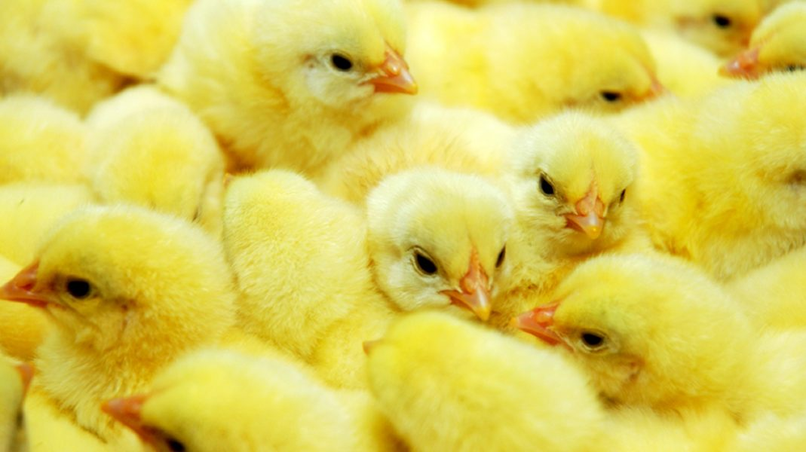
Criadas, selecionadas e fornecidas aos clientes.
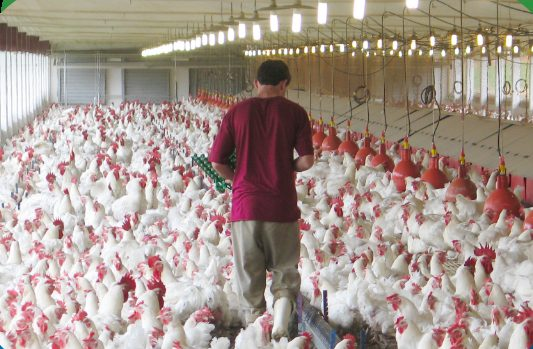
Gerado pelos clientes a partir das matrizes.
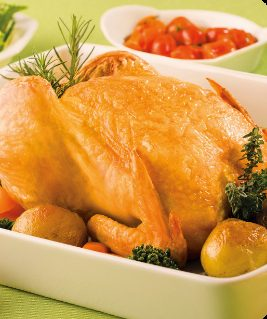
Carne de frango com qualidade de origem.
Escritórios, granjas, laboratórios e fábricas de ração que nos permitem produzir até 14 milhões de matrizes por ano.
Aviários climatizados e com iluminação controlada. Ração própria, 100% de origem vegetal.
Ler mais →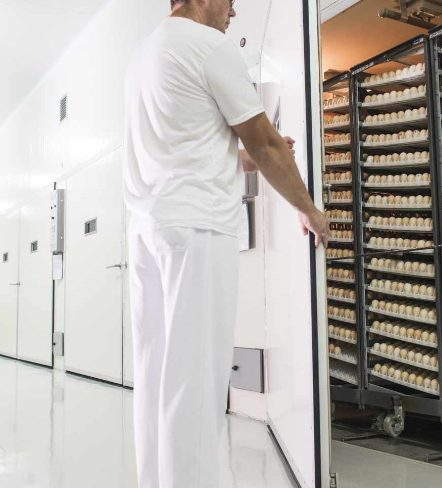
Programa de biosseguridade que evita a entrada de agentes patogênicos.
Ler mais →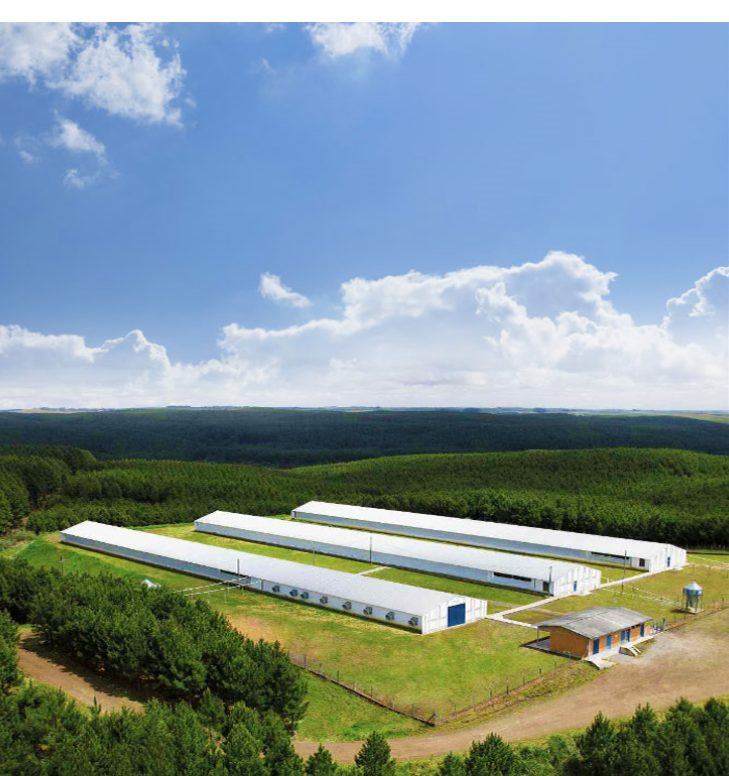
Dejetos tratados, fontes renováveis e coleta seletiva em todas as unidades.
Ler mais →Acesso restrito aos trabalhadores e procedimentos permanentemente atualizados.
Rotina obrigatória antes de entrar nas unidades.
Obrigatório para todos os trabalhadores.
De todos os materiais que entram nas granjas.
Circulação exclusivamente interna.
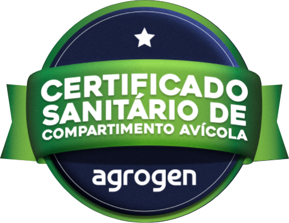
Atesta o cumprimento das exigências para Influenza Aviária e Doença de Newcastle nas granjas de reprodução, de corte e incubatórios.
Qualidade permanente nos processos, produtos e serviços.
Atender às expectativas a partir da visão do cliente.
Respeito, ambiente profissional e crescimento.
Compromisso com os processos e objetivos.
Econômica, social e ambiental.
Produzir matrizes com excelência, assegurando lucro e atendendo às expectativas de acionistas, clientes, consumidores e funcionários.
Ser reconhecida pela excelência em nossas atividades.
RS 124, km 02, Bairro Estação
Segunda a sexta, 7h30 às 17h
Canal de ética: 0800 713 0067